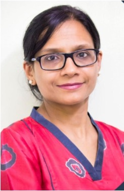
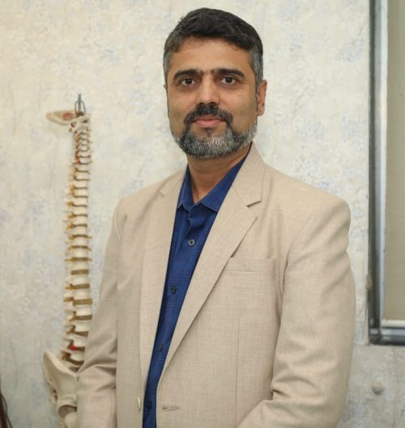
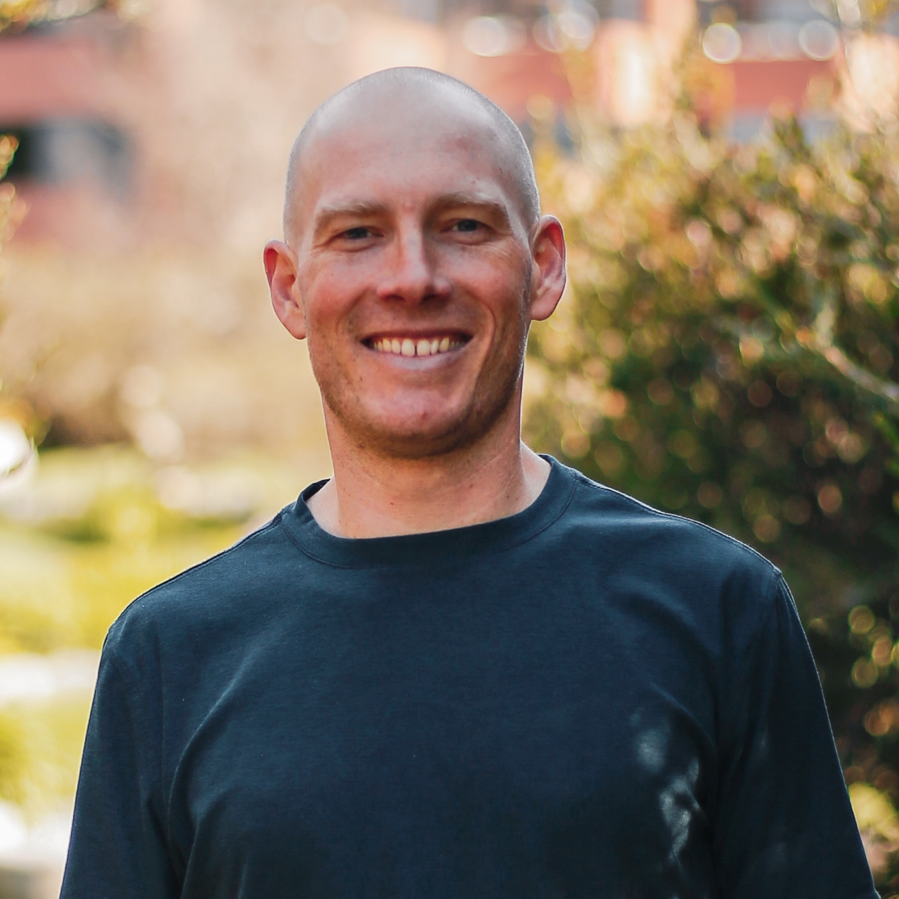
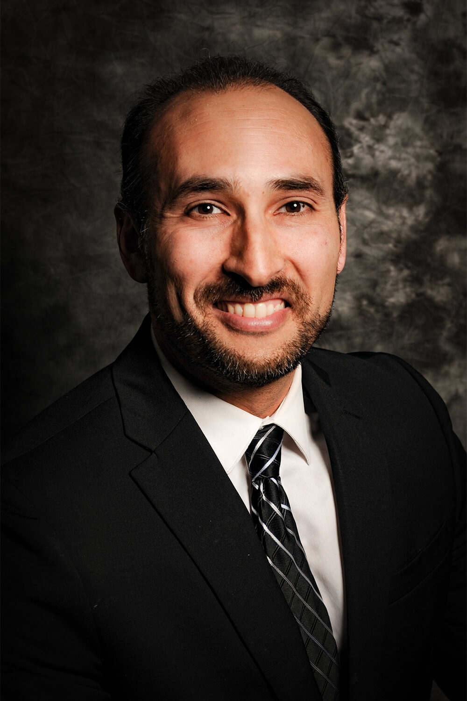
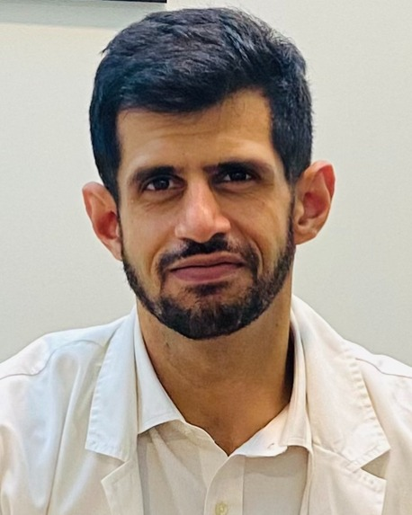
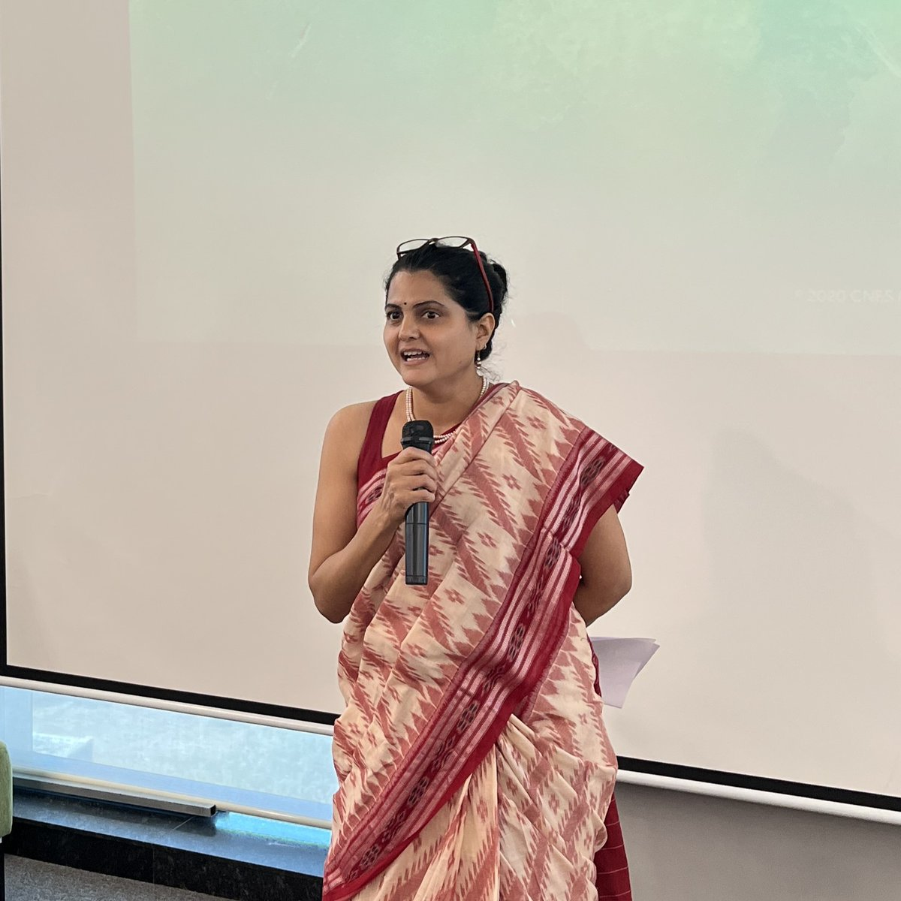

Our Network
These are providers we've personally curated — not employed. Every physician and specialist on this page was chosen for one reason: they practice medicine the way we believe it should be practiced — with curiosity, depth, and a genuine commitment to prevention.
We don't take a cut from any consultation. During this pilot, our only goal is connecting you with the right people.
Hormonal health shapes everything — energy, mood, weight, sleep, aging. Yet most people only encounter an endocrinologist after something has already gone wrong. Understanding your metabolic and hormonal landscape early is one of the highest-leverage things you can do for long-term health.
Endocrinology, Diabetes & Lifestyle Medicine
Founder, Unified Endocrine and Diabetes Care · California
I'm a triple board-certified physician specializing in Diabetes, Endocrinology and Metabolism, and Lifestyle Medicine. I trained in India before completing my Internal Medicine residency in New Jersey, diabetes research at Albert Einstein College of Medicine, and an Endocrinology fellowship at the University of Nebraska Medical Center. I founded Unified Endocrine and Diabetes Care in California — a Direct Care practice where I integrate nutrition, movement, and mindfulness into prevention and personalized care. I also teach at California Health Sciences University and UCSF Fresno, educate nationally, and host the Hormones and Hope podcast.

Lipidology & Cardiovascular Prevention
Founder, Lipid Clinic · Associate Consultant, KEM & Sahyadri Hospitals · Pune
I'm an internal medicine physician and lipidologist focused on preventing cardiovascular disease before it starts. I completed my MBBS as a silver medallist from Dr. Deshmukh Medical College, Amravati, and my DNB in Internal Medicine at KEM Hospital, Pune. My passion for lipid science led me to a clinical observership under Dr. Devaki Nair at the Royal Free Hospital in London, and in 2017 I became the first physician to receive the Lipidology Certification from the Lipid Association of India. I'm a member of the LAI core committee that published national consensus guidelines for managing dyslipidemia in Indians. In 2018 I founded the Lipid Clinic in Pune, dedicated to inherited dyslipidemias and cardiovascular risk reduction. I also serve as Associate Consultant in the Department of Medicine at KEM and Sahyadri Hospitals, where I've been a member of the Ethics Committee. I regularly train physicians, speak at national conferences, and run community awareness camps on heart disease prevention.
Pain is information. It's your body telling you something needs attention — not just management. Whether you're dealing with chronic pain, recovering from injury, or trying to build a sustainable movement practice, the goal isn't just relief. It's understanding what your body is asking for.

Pain & Palliative Care
Founder & Director, The Painex Clinic at Ruby Hall Clinic · Pune
I'm a pain and palliative care physician focused on delivering evidence-based, interventional pain management to improve quality of life. I founded The Painex Clinic at Ruby Hall Clinic in Pune and have served as a consultant at MJM Hospital and Joshi and Ratna Hospital for over a decade. I completed my MBBS from GMC Miraj, followed by a DNB in Anaesthesiology, and advanced fellowships in pain medicine from the Daradia Institute, IASP-ISSP, and the Indian Academy of Pain. My academic work includes peer-reviewed publications, national and international conference presentations, and faculty roles in pain medicine training programs.
Physiotherapy & Lifestyle Coaching
Physiotherapist & Lifestyle Coach · Pune
I'm a professional physiotherapist and lifestyle coach dedicated to helping individuals and communities achieve optimal health at every stage of life. With extensive experience in sports rehabilitation and preventive health, I specialize in coaching people through science-based lifestyle changes that promote longevity, vitality, and resilience. I believe that integrating preventive and corrective techniques into daily routines can transform not just individual lives but entire communities. I'm a recognized writer, speaker, and advocate for proactive health practices, and I frequently conduct workshops aimed at improving quality of life and empowering people to take charge of their health for the long term.
Performance isn't just for athletes. It's about understanding what your body is capable of and building the systems — training, recovery, nutrition — to sustain it over decades. Whether you're training for a race or simply want to move through life with more capacity, performance thinking changes the equation.

Performance Coach & Former Professional Cyclist
GM of Endurance Sport, Eternal
I'm a former Tour de France cyclist and professional triathlete — I built my career on grit and versatility across the world's most demanding endurance events. After retiring from professional sport, I moved into consulting, helping elite athletes and organizations apply high-performance principles beyond the field. Today, I serve as GM of Endurance Sport at Eternal, a performance healthcare company that blends performance medicine with concierge care to support active individuals in living life on their terms, to the very end.

Longevity & Preventive Medicine
Stanford, UCSF & Penn-trained Physician
I am passionate about using science and evidence to prevent chronic disease and help you live your best life. For me, optimizing health is not only a passion, it is personal. As a South Asian, I am at increased risk for diabetes, heart disease, and stroke which all run in my family. I took care of my father who suffered from dementia and saw the impact on him and my family. I am doing what I can to prevent these chronic diseases in myself and I want to share my learnings with you. I am a Stanford, UCSF, and Penn trained physician. For the past decade, I have been studying longevity and how we can use lifestyle changes to improve our health. Now, I want to help you thrive.
Women's health has been chronically under-researched and under-served. From fertility planning to reproductive health to navigating complex decisions around IVF, having a physician who combines deep expertise with genuine patience makes all the difference.
Gynecology, IVF & Reproductive Health
Head of IVF/ART, KEM Hospital · Pune
I'm an experienced gynecologist and the Head of IVF/ART at KEM Hospital, Pune, where I also serve as a Consultant in Obstetrics & Gynaecology. I hold a DGO and DNB in Ob-Gyn and received advanced training in infertility and IVF under Dr. Prakash Trivedi in Mumbai and Dr. Purnima Nadkarni in Gujarat. My expertise spans IVF/ICSI, recurrent IVF failures, poor ovarian response, male infertility, and ultrasound-guided diagnostic and interventional procedures. I'm known for my compassionate, evidence-based approach to helping couples navigate the path to parenthood.
Many of the conditions that shape how we age — autoimmune disease, chronic inflammation, kidney health — develop quietly over years before they demand attention. The physicians in this area specialize in understanding these long-arc health challenges and helping you get ahead of them, not just react to them.

Rheumatology & Autoimmune Disease
Rheumatologist & Clinical Researcher · Pune
I'm a rheumatologist and clinical researcher based in Pune. My clinical work spans the spectrum of systemic autoimmune disease and musculoskeletal conditions in both children and adults. My research focuses on the interface of metabolism and inflammation-fibrosis pathways, and more recently, the use of artificial intelligence to support diagnosis of inflammatory disease in resource-limited settings. I'm supported by the DBT/Wellcome India Alliance and collaborate with IISER Pune and Duke University.

Nephrology & Preventive Eldercare
UK-trained Nephrologist · Pune | Founder, Nivarak & I-SHARE Foundation
I'm a UK-trained nephrologist with over 13 years of experience as a Consultant Nephrologist in Pune. After completing my specialist training in Nephrology in England, I returned to India to bring global best practices to local care. I founded Nivarak, a preventive eldercare startup focused on proactive, coordinated health support for seniors, and co-founded the I-SHARE Foundation, an NGO dedicated to improving access to medical care for underserved communities. Outside of medicine, I'm an avid tennis player and a passionate dog lover — I often say that dogs are truly a gift to humanity.
What you eat and how you live are the foundations of long-term health — yet nutrition advice is often generic, contradictory, or disconnected from your unique physiology. Evidence-based nutritional guidance, rooted in clinical experience, can reshape metabolic health, athletic performance, and how well you age.
Clinical & Sports Nutritionist · Lifestyle Coach
PreventiveHealth.ai · Pune
I'm a Clinical and Sports Nutritionist with over 19 years of experience in evidence-based nutrition practice and preventive healthcare. I hold a Doctorate in Management Sciences (Nutrition) and a Postgraduate Diploma in Sports Science and Nutrition, along with certifications in Obesity Management, Pediatric Nutrition and am trained as a Nutrigenomic Counselor. I have worked across leading hospitals such as Jupiter Hospital, Jehangir Hospital, and Bharati Hospital, supporting patients across pediatric, adolescent, adult, and geriatric age groups. My approach integrates physiology, metabolism, and behavioural counselling to enable sustainable lifestyle modification. I have contributed to national guidelines for the Research Society for the Study of Diabetes in India and have authored publications in peer-reviewed international journals.
Help us improve. Your feedback remains anonymous.
Your feedback helps us build something better.